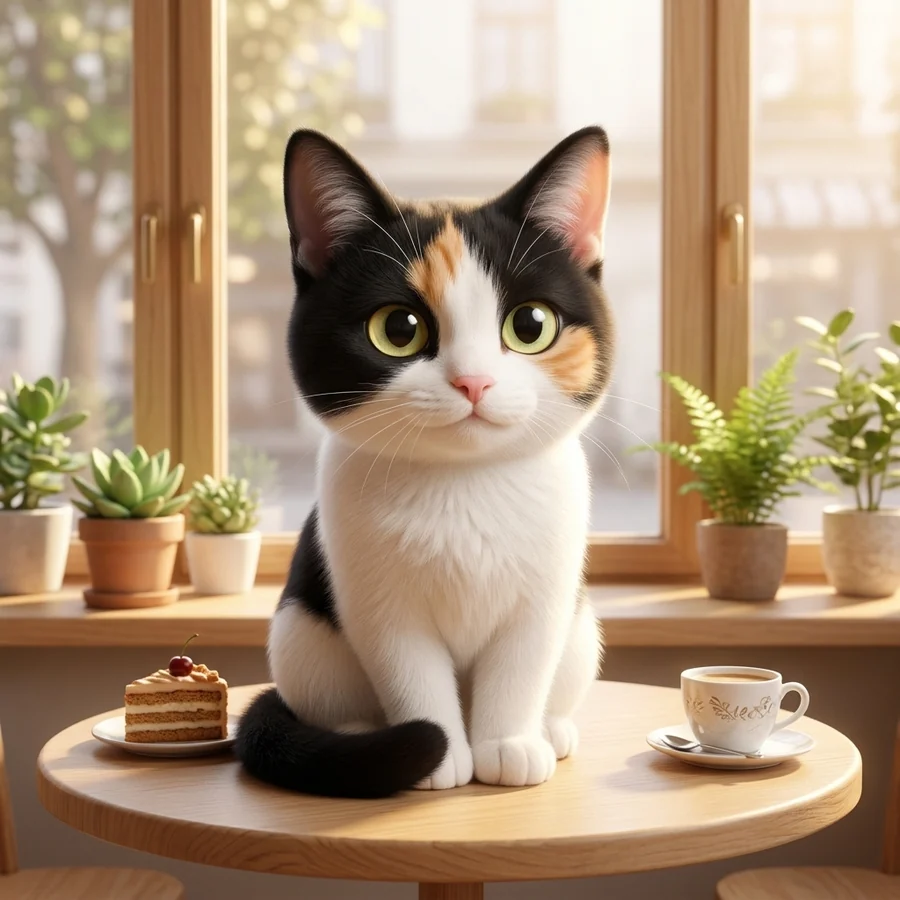
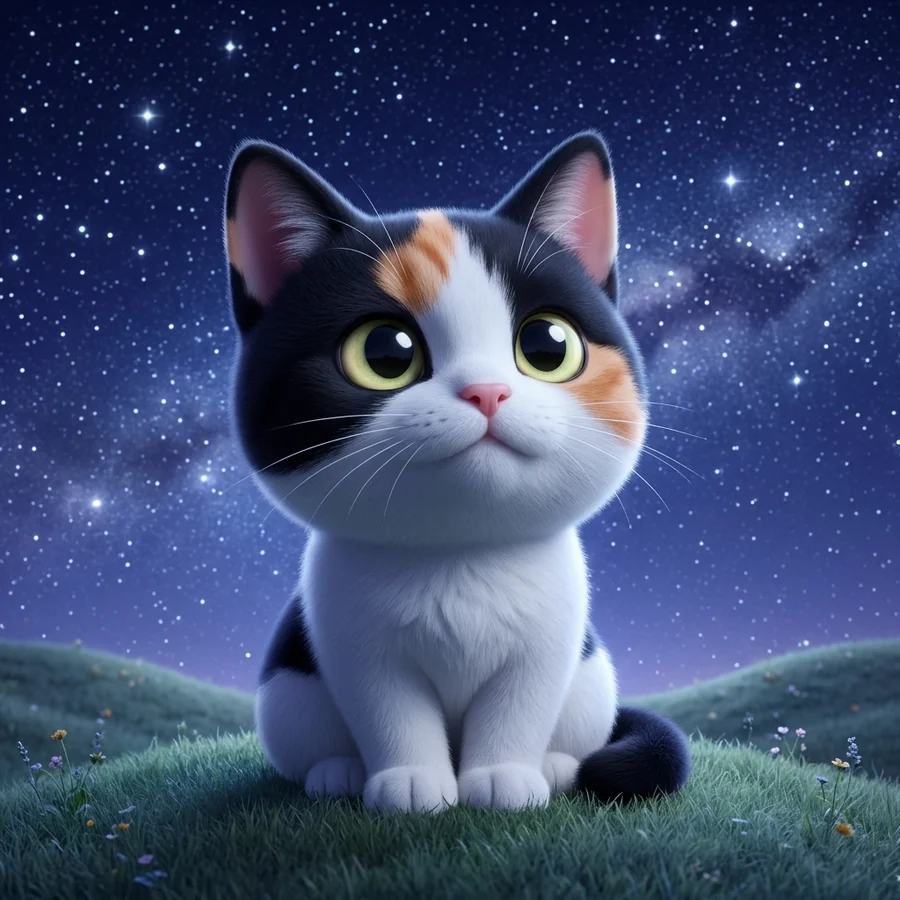
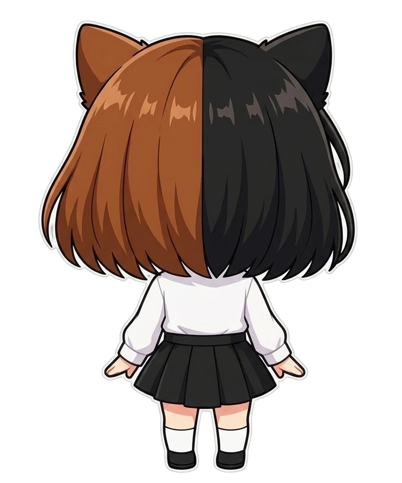
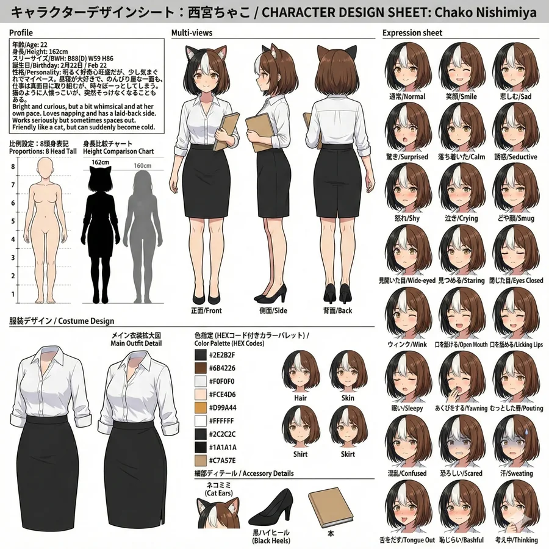
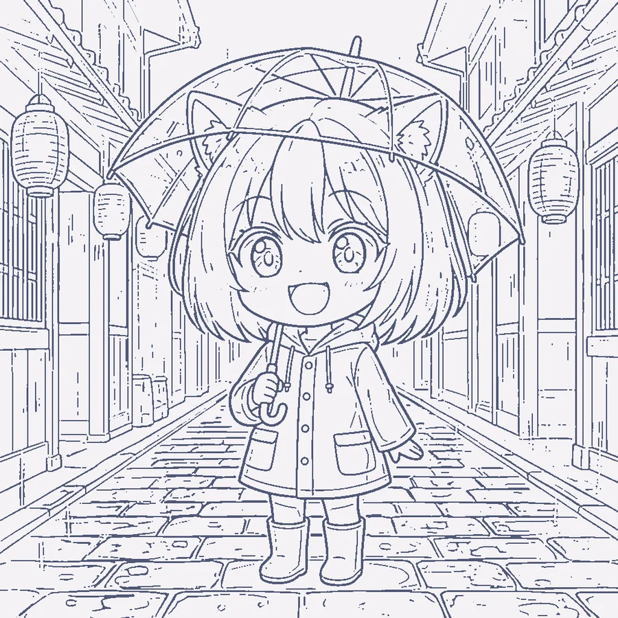
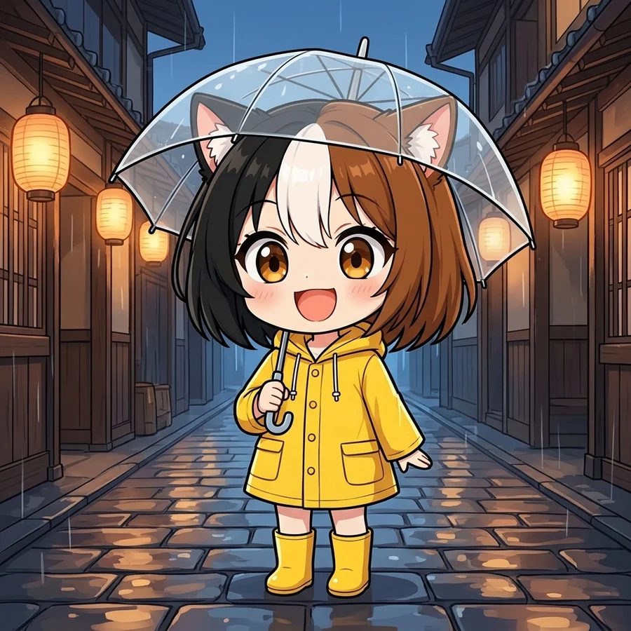
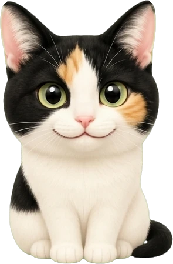
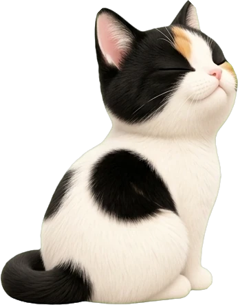

絵が描けない会社員のための
1日30分から始める
AI画像副業
猫耳の女の子
雨の夕暮れ
黄色いレインコート
太い線のアニメ風
たたいてみて
WORD CARDS


主役
場所
BY THE NUMBERS
THREE CHANGES
30-DAY ROADMAP
DAY
1
CHARACTER SHEET


FROM WORDS TO PICTURE
白い紙が、
自分の絵になる。
横になぞってみて →


↔
01描きたい
02試す
03形になる
01/03
頭の中には、もう絵がある。
WORK DECODING
TAKE A BREAK
なでると、指についてくるよ。


INSTRUCTOR & VOICE

受講生の声
受講生の声
QUESTIONS